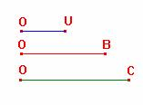

Problema 270.-
Un triángulo ABC, verifica entre uno
de sus lados, a, la mediana correspondiente a ese lado ma, y el
radio del círculo circunscrito R, la relación:
a2 = 4∙R∙ma.
Probar si es cierto o no que aparte de
los triángulos rectángulos en A, hay, al menos otro.
Propuesto por Juan Bosco Romero Márquez,
profesor colaborador de
Solución
de F. Damián Aranda Ballesteros, profesor del IES Blas Infante de Córdoba,
España.
Según
las siguientes expresiones de la mediana, , y del radio, , podemos ahora expresar la relación dada de esta otra manera
equivalente:
a2 = 4∙R∙ma Þ a4 = 16∙R2∙m2a Þ a4 = 16∙R2∙m2a Þ
Teniendo en cuenta que:
a2 = b2+c2−2∙b∙c∙cosA Þ 2∙b2+2∙c2 = 4∙b∙c∙cosA + 2∙a2 y, sustituyendo, obtenemos:
Þ Þ .
En
definitiva:
Þ
Veamos
que, en efecto, existirá otra solución aparte de los triángulos rectángulos en
A.
En
efecto, de la relación a2∙cosA +4∙b∙c = 0,
deducimos que:
(b2
+ c2 − 2∙b∙c∙cosA )∙cosA + 4∙b∙c = 0 Þ
−2∙b∙c∙cos2A
+ (b2 + c2)∙cosA + 4∙b∙c = 0
Esta
ecuación tiene dos soluciones de distinto signo.
Nos interesará para nuestro
propósito la solución negativa.
.
Veamos
cómo podemos construir el triángulo a partir de esta expresión de cosA.
|
Sean
dados los segmentos OU como unidad, y los segmentos OB=b y OC=c  |
|
En
primer lugar, calculamos gráficamente los segmentos de longitudes b2 y
c2 como los cuartos proporcionales en las siguientes proporciones: ; |
|
Así ya
podemos calcular el segmento de longitud (b2+c2)2
: |
|
Continuamos
ahora con el cálculo del segmento de longitud 32∙b2c2 siguiendo la
proporción: |
|
Ahora
calculamos el segmento de longitud como
media proporcional en la proporción: |
|
Así
ya tenemos el segmento de longitud orientada negativa igual a la expresión , que usaremos cuando tengamos que realizar
con posterioridad el cálculo del ángulo A tal que (negativo) |
|
Por otro
lado, el denominador 4bc lo podemos obtener fácilmente de: |
|
Por
fin, el segmento orientado negativamente como cos A lo calcularemos a partir
de la proporción: |
|
Teniendo
el segmento cuya medida orientada negativa es cos A, resulta ya fácil determinar
en el círculo goniométrico (de radio igual a la unidad) el ángulo obtuso A
que, junto a los segmentos dados b y c, nos permitirá construir finalmente el
triángulo ABC. |